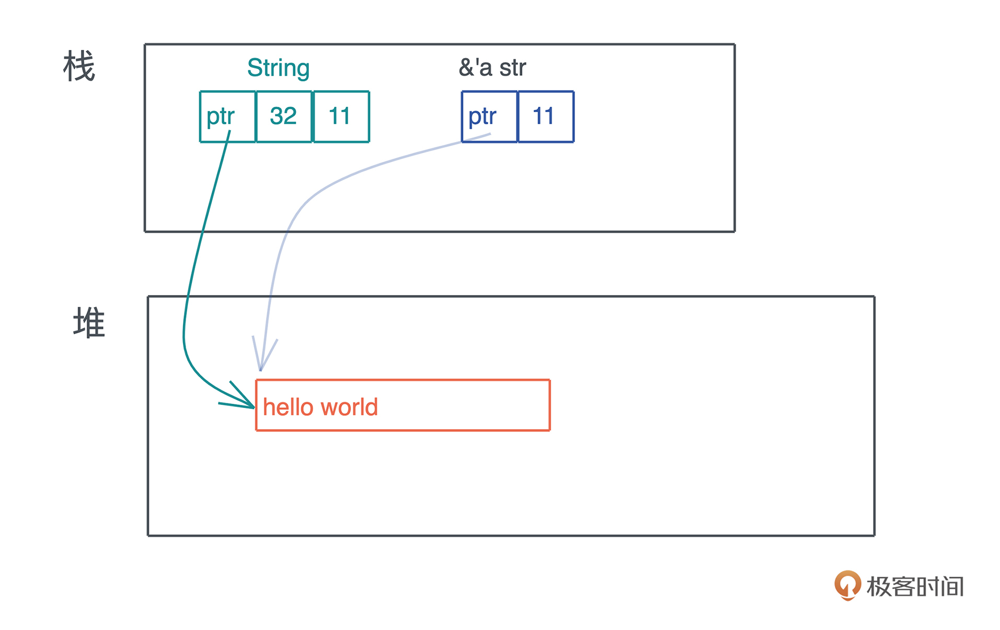
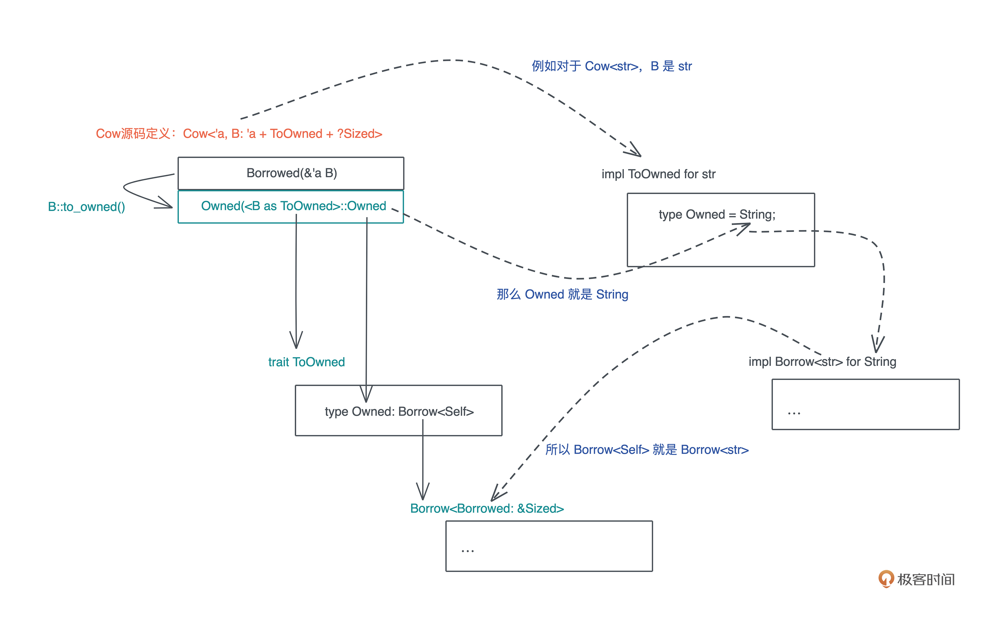
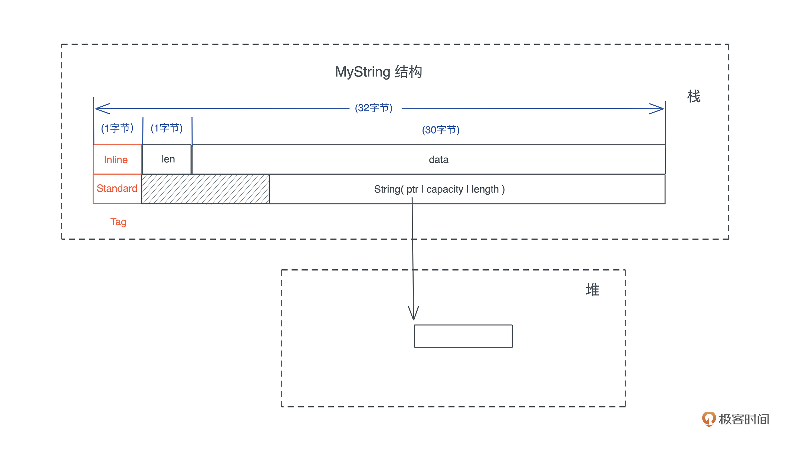

- 00 开篇词 让Rust成为你的下一门主力语言.md
- 01 内存：值放堆上还是放栈上，这是一个问题.md
- 02 串讲：编程开发中，那些你需要掌握的基本概念.md
- 03 初窥门径：从你的第一个Rust程序开始！.md
- 04 get hands dirty：来写个实用的CLI小工具.md
- 05 get hands dirty：做一个图片服务器有多难？.md
- 06 get hands dirty：SQL查询工具怎么一鱼多吃？.md
- 07 所有权：值的生杀大权到底在谁手上？.md
- 08 所有权：值的借用是如何工作的？.md
- 09 所有权：一个值可以有多个所有者么？.md
- 10 生命周期：你创建的值究竟能活多久？.md
- 11 内存管理：从创建到消亡，值都经历了什么？.md
- 12 类型系统：Rust的类型系统有什么特点？.md
- 13 类型系统：如何使用trait来定义接口？.md
- 14 类型系统：有哪些必须掌握的trait？.md
- 15 数据结构：这些浓眉大眼的结构竟然都是智能指针？.md
- 16 数据结构：Vec_T_、&[T]、Box_[T]_ ，你真的了解集合容器么？.md
- 17 数据结构：软件系统核心部件哈希表，内存如何布局？.md
- 18 错误处理：为什么Rust的错误处理与众不同？.md
- 19 闭包：FnOnce、FnMut和Fn，为什么有这么多类型？.md
- 20 4 Steps ：如何更好地阅读Rust源码？.md
- 21 阶段实操（1）：构建一个简单的KV server-基本流程.md
- 22 阶段实操（2）：构建一个简单的KV server-基本流程.md
- 23 类型系统：如何在实战中使用泛型编程？.md
- 24 类型系统：如何在实战中使用trait object？.md
- 25 类型系统：如何围绕trait来设计和架构系统？.md
- 26 阶段实操（3）：构建一个简单的KV server-高级trait技巧.md
- 27 生态系统：有哪些常有的Rust库可以为我所用？.md
- 28 网络开发（上）：如何使用Rust处理网络请求？.md
- 29 网络开发（下）：如何使用Rust处理网络请求？.md
- 30 Unsafe Rust：如何用C++的方式打开Rust？.md
- 31 FFI：Rust如何和你的语言架起沟通桥梁？.md
- 32 实操项目：使用PyO3开发Python3模块.md
- 33 并发处理（上）：从atomics到Channel，Rust都提供了什么工具？.md
- 34 并发处理（下）：从atomics到Channel，Rust都提供了什么工具？.md
- 35 实操项目：如何实现一个基本的MPSC channel？.md
- 36 阶段实操（4）：构建一个简单的KV server-网络处理.md
- 37 阶段实操（5）：构建一个简单的KV server-网络安全.md
- 38 异步处理：Future是什么？它和async_await是什么关系？.md
- 39 异步处理：async_await内部是怎么实现的？.md
- 40 异步处理：如何处理异步IO？.md
- 41 阶段实操（6）：构建一个简单的KV server-异步处理.md
- 42 阶段实操（7）：构建一个简单的KV server-如何做大的重构？.md
- 43 生产环境：真实世界下的一个Rust项目包含哪些要素？.md
- 44 数据处理：应用程序和数据如何打交道？.md
- 45 阶段实操（8）：构建一个简单的KV server-配置_测试_监控_CI_CD.md
- 46 软件架构：如何用Rust架构复杂系统？.md
- 加餐 Rust2021版次问世了！.md
- 加餐 代码即数据：为什么我们需要宏编程能力？.md
- 加餐 宏编程（上）：用最“笨”的方式撰写宏.md
- 加餐 宏编程（下）：用 syn_quote 优雅地构建宏.md
- 加餐 愚昧之巅：你的Rust学习常见问题汇总.md
- 加餐 期中测试：参考实现讲解.md
- 加餐 期中测试：来写一个简单的grep命令行.md
- 加餐 这个专栏你可以怎么学，以及Rust是否值得学？.md
- 大咖助场 开悟之坡（上）：Rust的现状、机遇与挑战.md
- 大咖助场 开悟之坡（下）：Rust的现状、机遇与挑战.md
- 特别策划 学习锦囊（一）：听听课代表们怎么说.md
- 特别策划 学习锦囊（三）：听听课代表们怎么说.md
- 特别策划 学习锦囊（二）：听听课代表们怎么说.md
- 用户故事 绝望之谷：改变从学习开始.md
- 用户故事 语言不仅是工具，还是思维方式.md
- 结束语 永续之原：Rust学习，如何持续精进？.md
15 数据结构：这些浓眉大眼的结构竟然都是智能指针？
你好，我是陈天。
到现在为止我们学了Rust的所有权与生命周期、内存管理以及类型系统，基础知识里还剩一块版图没有涉及：数据结构，数据结构里最容易让人困惑的就是智能指针，所以今天我们就来解决这个难点。
我们之前简单介绍过指针，这里还是先回顾一下：指针是一个持有内存地址的值，可以通过解引用来访问它指向的内存地址，理论上可以解引用到任意数据类型；引用是一个特殊的指针，它的解引用访问是受限的，只能解引用到它引用数据的类型，不能用作它用。
那什么是智能指针呢？
智能指针
在指针和引用的基础上，Rust 偷师 C++，提供了智能指针。智能指针是一个表现行为很像指针的数据结构，但除了指向数据的指针外，它还有元数据以提供额外的处理能力。
这个定义有点模糊，我们对比其他的数据结构来明确一下。
你有没有觉得很像之前讲的胖指针。智能指针一定是一个胖指针，但胖指针不一定是一个智能指针。比如 &str 就只是一个胖指针，它有指向堆内存字符串的指针，同时还有关于字符串长度的元数据。
我们看智能指针 String 和 &str 的区别：
从图上可以看到，String 除了多一个 capacity 字段，似乎也没有什么特殊。但 String 对堆上的值有所有权，而 &str 是没有所有权的，这是 Rust 中智能指针和普通胖指针的区别。
那么又有一个问题了，智能指针和结构体有什么区别呢？因为我们知道，String 是用结构体定义的：
pub struct String {
vec: Vec<u8>,
}
和普通的结构体不同的是，String 实现了 Deref 和 DerefMut，这使得它在解引用的时候，会得到 &str，看下面的标准库的实现：
impl ops::Deref for String {
type Target = str;
fn deref(&self) -> &str {
unsafe { str::from_utf8_unchecked(&self.vec) }
}
}
impl ops::DerefMut for String {
fn deref_mut(&mut self) -> &mut str {
unsafe { str::from_utf8_unchecked_mut(&mut *self.vec) }
}
}
另外，由于在堆上分配了数据，String 还需要为其分配的资源做相应的回收。而 String 内部使用了 Vec
unsafe impl<#[may_dangle] T, A: Allocator> Drop for Vec<T, A> {
fn drop(&mut self) {
unsafe {
// use drop for [T]
// use a raw slice to refer to the elements of the vector as weakest necessary type;
// could avoid questions of validity in certain cases
ptr::drop_in_place(ptr::slice_from_raw_parts_mut(self.as_mut_ptr(), self.len))
}
// RawVec handles deallocation
}
}
所以再清晰一下定义，在 Rust 中，凡是需要做资源回收的数据结构，且实现了 Deref/DerefMut/Drop，都是智能指针。
按照这个定义，除了 String，在之前的课程中我们遇到了很多智能指针，比如用于在堆上分配内存的 Box
今天我们就深入分析三个使用智能指针的数据结构：在堆上创建内存的 Box
而且最后我们会尝试实现自己的智能指针。希望学完后你不但能更好地理解智能指针，还能在需要的时候，构建自己的智能指针来解决问题。
Box
我们先看 Box
为什么有Box
C 需要使用 malloc/calloc/realloc/free 来处理内存的分配，很多时候，被分配出来的内存在函数调用中来来回回使用，导致谁应该负责释放这件事情很难确定，给开发者造成了极大的心智负担。
C++ 在此基础上改进了一下，提供了一个智能指针 unique_ptr，可以在指针退出作用域的时候释放堆内存，这样保证了堆内存的单一所有权。这个 unique_ptr 就是 Rust 的 Box
你看 Box
pub struct Unique<T: ?Sized> {
pointer: *const T,
// NOTE: this marker has no consequences for variance, but is necessary
// for dropck to understand that we logically own a `T`.
//
// For details, see:
// https://github.com/rust-lang/rfcs/blob/master/text/0769-sound-generic-drop.md#phantom-data
_marker: PhantomData<T>,
}
我们知道，在堆上分配内存，需要使用内存分配器（Allocator）。如果你上过操作系统课程，应该还记得一个简单的 buddy system 是如何分配和管理堆内存的。
设计内存分配器的目的除了保证正确性之外，就是为了有效地利用剩余内存，并控制内存在分配和释放过程中产生的碎片的数量。在多核环境下，它还要能够高效地处理并发请求。（如果你对通用内存分配器感兴趣，可以看参考资料）
堆上分配内存的 Box
pub struct Box<T: ?Sized,A: Allocator = Global>(Unique<T>, A)
Allocator trait 提供很多方法：
- allocate是主要方法，用于分配内存，对应 C 的 malloc/calloc；
- deallocate，用于释放内存，对应 C 的 free；
- 还有 grow/shrink，用来扩大或缩小堆上已分配的内存，对应 C 的 realloc。
这里对 Allocator trait 我们就不详细介绍了，如果你想替换默认的内存分配器，可以使用 #[global_allocator] 标记宏，定义你自己的全局分配器。下面的代码展示了如何在 Rust 下使用 jemalloc：
use jemallocator::Jemalloc;
#[global_allocator]
static GLOBAL: Jemalloc = Jemalloc;
fn main() {}
这样设置之后，你使用 Box::new() 分配的内存就是 jemalloc 分配出来的了。另外，如果你想撰写自己的全局分配器，可以实现 GlobalAlloc trait，它和 Allocator trait 的区别，主要在于是否允许分配长度为零的内存。
使用场景
下面我们来实现一个自己的内存分配器。别担心，这里就是想 debug 一下，看看内存如何分配和释放，并不会实际实现某个分配算法。
首先看内存的分配。这里 MyAllocator 就用 System allocator，然后加 eprintln!()，和我们常用的 println!() 不同的是，eprintln!() 将数据打印到 stderr（代码）：
use std::alloc::{GlobalAlloc, Layout, System};
struct MyAllocator;
unsafe impl GlobalAlloc for MyAllocator {
unsafe fn alloc(&self, layout: Layout) -> *mut u8 {
let data = System.alloc(layout);
eprintln!("ALLOC: {:p}, size {}", data, layout.size());
data
}
unsafe fn dealloc(&self, ptr: *mut u8, layout: Layout) {
System.dealloc(ptr, layout);
eprintln!("FREE: {:p}, size {}", ptr, layout.size());
}
}
#[global_allocator]
static GLOBAL: MyAllocator = MyAllocator;
#[allow(dead_code)]
struct Matrix {
// 使用不规则的数字如 505 可以让 dbg! 的打印很容易分辨出来
data: [u8; 505],
}
impl Default for Matrix {
fn default() -> Self {
Self { data: [0; 505] }
}
}
fn main() {
// 在这句执行之前已经有好多内存分配
let data = Box::new(Matrix::default());
// 输出中有一个 1024 大小的内存分配，是 println! 导致的
println!(
"!!! allocated memory: {:p}, len: {}",
&*data,
std::mem::size_of::<Matrix>()
);
// data 在这里 drop，可以在打印中看到 FREE
// 之后还有很多其它内存被释放
}
注意这里不能使用 println!() 。因为 stdout 会打印到一个由 Mutex 互斥锁保护的共享全局 buffer 中，这个过程中会涉及内存的分配，分配的内存又会触发 println!()，最终造成程序崩溃。而 eprintln! 直接打印到 stderr，不会 buffer。
运行这段代码，你可以看到类似如下输出，其中 505 大小的内存是我们 Box::new() 出来的：
❯ cargo run --bin allocator --quiet
ALLOC: 0x7fbe0dc05c20, size 4
ALLOC: 0x7fbe0dc05c30, size 5
FREE: 0x7fbe0dc05c20, size 4
ALLOC: 0x7fbe0dc05c40, size 64
ALLOC: 0x7fbe0dc05c80, size 48
ALLOC: 0x7fbe0dc05cb0, size 80
ALLOC: 0x7fbe0dc05da0, size 24
ALLOC: 0x7fbe0dc05dc0, size 64
ALLOC: 0x7fbe0dc05e00, size 505
ALLOC: 0x7fbe0e008800, size 1024
!!! allocated memory: 0x7fbe0dc05e00, len: 505
FREE: 0x7fbe0dc05e00, size 505
FREE: 0x7fbe0e008800, size 1024
FREE: 0x7fbe0dc05c30, size 5
FREE: 0x7fbe0dc05c40, size 64
FREE: 0x7fbe0dc05c80, size 48
FREE: 0x7fbe0dc05cb0, size 80
FREE: 0x7fbe0dc05dc0, size 64
FREE: 0x7fbe0dc05da0, size 24
在使用 Box 分配堆内存的时候要注意，Box::new() 是一个函数，所以传入它的数据会出现在栈上，再移动到堆上。所以，如果我们的 Matrix 结构不是 505 个字节，是一个非常大的结构，就有可能出问题。
比如下面的代码想在堆上分配 16M 内存，如果你在 playground 里运行，直接栈溢出 stack overflow（代码）：
fn main() {
// 在堆上分配 16M 内存，但它会现在栈上出现，再移动到堆上
let boxed = Box::new([0u8; 1 << 24]);
println!("len: {}", boxed.len());
}
但如果你在本地使用 “cargo run —release” 编译成 release 代码运行，会正常执行！
这是因为 “cargo run” 或者在 playground 下运行，默认是 debug build，它不会做任何 inline 的优化，而 Box::new() 的实现就一行代码，并注明了要 inline，在 release 模式下，这个函数调用会被优化掉：
#[cfg(not(no_global_oom_handling))]
#[inline(always)]
#[doc(alias = "alloc")]
#[doc(alias = "malloc")]
#[stable(feature = "rust1", since = "1.0.0")]
pub fn new(x: T) -> Self {
box x
}
如果不 inline，整个 16M 的大数组会通过栈内存传递给 Box::new，导致栈溢出。这里我们惊喜地发现了一个新的关键字 box。然而 box 是 Rust 内部的关键字，用户代码无法调用，它只出现在 Rust 代码中，用于分配堆内存，box 关键字在编译时，会使用内存分配器分配内存。
搞明白 Box
#[stable(feature = "rust1", since = "1.0.0")]
unsafe impl<#[may_dangle] T: ?Sized, A: Allocator> Drop for Box<T, A> {
fn drop(&mut self) {
// FIXME: Do nothing, drop is currently performed by compiler.
}
}
哈，目前 drop trait 什么都没有做，编译器会自动插入 deallocate 的代码。这是 Rust 语言的一种策略：在具体实现还没有稳定下来之前，我先把接口稳定，实现随着之后的迭代慢慢稳定。
这样可以极大地避免语言在发展的过程中，引入对开发者而言的破坏性更新（breaking change）。破坏性更新会使得开发者在升级语言的版本时，不得不大幅更改原有代码。
Python 是个前车之鉴，由于引入了大量的破坏性更新，Python 2 到 3 的升级花了十多年才慢慢完成。所以 Rust 在设计接口时非常谨慎，很多重要的接口都先以库的形式存在了很久，最终才成为标准库的一部分，比如 Future trait。一旦接口稳定后，内部的实现可以慢慢稳定。
Cow<'a, B>
了解了 Box 的工作原理后，再来看 Cow<'a, B>的原理和使用场景，（[第12讲]）讲泛型数据结构的时候，我们简单讲过参数B的三个约束。
Cow 是 Rust 下用于提供写时克隆（Clone-on-Write）的一个智能指针，它跟虚拟内存管理的写时复制（Copy-on-write）有异曲同工之妙：包裹一个只读借用，但如果调用者需要所有权或者需要修改内容，那么它会 clone 借用的数据。
我们看Cow的定义：
pub enum Cow<'a, B> where B: 'a + ToOwned + ?Sized {
Borrowed(&'a B),
Owned(<B as ToOwned>::Owned),
}
它是一个 enum，可以包含一个对类型 B 的只读引用，或者包含对类型 B 的拥有所有权的数据。
这里又引入了两个 trait，首先是 ToOwned，在 ToOwned trait 定义的时候，又引入了 Borrow trait，它们都是 std::borrow 下的 trait：
pub trait ToOwned {
type Owned: Borrow<Self>;
#[must_use = "cloning is often expensive and is not expected to have side effects"]
fn to_owned(&self) -> Self::Owned;
fn clone_into(&self, target: &mut Self::Owned) { ... }
}
pub trait Borrow<Borrowed> where Borrowed: ?Sized {
fn borrow(&self) -> &Borrowed;
}
如果你看不懂这段代码，不要着急，想要理解 Cow trait，ToOwned trait 是一道坎，因为 type Owned: Borrow
首先，type Owned: Borrow
impl ToOwned for str {
type Owned = String;
#[inline]
fn to_owned(&self) -> String {
unsafe { String::from_utf8_unchecked(self.as_bytes().to_owned()) }
}
fn clone_into(&self, target: &mut String) {
let mut b = mem::take(target).into_bytes();
self.as_bytes().clone_into(&mut b);
*target = unsafe { String::from_utf8_unchecked(b) }
}
}
可以看到关联类型 Owned 被定义为 String，而根据要求，String 必须定义 Borrow
ToOwned 要求是 Borrow
impl Borrow<str> for String {
#[inline]
fn borrow(&self) -> &str {
&self[..]
}
}
你是不是有点晕了，我用一张图梳理了这几个 trait 之间的关系：- 
通过这张图，我们可以更好地搞清楚 Cow 和 ToOwned/Borrow
这里，你可能会疑惑，为何 Borrow 要定义成一个泛型 trait 呢？搞这么复杂，难道一个类型还可以被借用成不同的引用么？
是的。我们看一个例子（代码）：
use std::borrow::Borrow;
fn main() {
let s = "hello world!".to_owned();
// 这里必须声明类型，因为 String 有多个 Borrow<T> 实现
// 借用为 &String
let r1: &String = s.borrow();
// 借用为 &str
let r2: &str = s.borrow();
println!("r1: {:p}, r2: {:p}", r1, r2);
}
在这里例子里，String 可以被借用为 &String，也可以被借用为 &str。
好，再来继续看 Cow。我们说它是智能指针，那它自然需要实现 Deref trait：
impl<B: ?Sized + ToOwned> Deref for Cow<'_, B> {
type Target = B;
fn deref(&self) -> &B {
match *self {
Borrowed(borrowed) => borrowed,
Owned(ref owned) => owned.borrow(),
}
}
}
实现的原理很简单，根据 self 是 Borrowed 还是 Owned，我们分别取其内容，生成引用：
- 对于 Borrowed，直接就是引用；
- 对于 Owned，调用其 borrow() 方法，获得引用。
这就很厉害了。虽然 Cow 是一个 enum，但是通过 Deref 的实现，我们可以获得统一的体验，比如 Cow
使用场景
那么 Cow 有什么用呢？显然，它可以在需要的时候才进行内存的分配和拷贝，在很多应用场合，它可以大大提升系统的效率。如果 Cow<'a, B> 中的 Owned 数据类型是一个需要在堆上分配内存的类型，如 String、Vec
我们说过，相对于栈内存的分配释放来说，堆内存的分配和释放效率要低很多，其内部还涉及系统调用和锁，减少不必要的堆内存分配是提升系统效率的关键手段。而 Rust 的 Cow<'a, B>，在帮助你达成这个效果的同时，使用体验还非常简单舒服。
光这么说没有代码佐证，我们看一个使用 Cow 的实际例子。
在解析 URL 的时候，我们经常需要将 querystring 中的参数，提取成 KV pair 来进一步使用。绝大多数语言中，提取出来的 KV 都是新的字符串，在每秒钟处理几十 k 甚至上百 k 请求的系统中，你可以想象这会带来多少次堆内存的分配。
但在 Rust 中，我们可以用 Cow 类型轻松高效处理它，在读取 URL 的过程中：
- 每解析出一个 key 或者 value，我们可以用一个 &str 指向 URL 中相应的位置，然后用 Cow 封装它；
- 而当解析出来的内容不能直接使用，需要 decode 时，比如 “hello%20world”，我们可以生成一个解析后的 String，同样用 Cow 封装它。
看下面的例子（代码）：
use std::borrow::Cow;
use url::Url;
fn main() {
let url = Url::parse("https://tyr.com/rust?page=1024&sort=desc&extra=hello%20world").unwrap();
let mut pairs = url.query_pairs();
assert_eq!(pairs.count(), 3);
let (mut k, v) = pairs.next().unwrap();
// 因为 k, v 都是 Cow<str> 他们用起来感觉和 &str 或者 String 一样
// 此刻，他们都是 Borrowed
println!("key: {}, v: {}", k, v);
// 当修改发生时，k 变成 Owned
k.to_mut().push_str("_lala");
print_pairs((k, v));
print_pairs(pairs.next().unwrap());
// 在处理 extra=hello%20world 时，value 被处理成 "hello world"
// 所以这里 value 是 Owned
print_pairs(pairs.next().unwrap());
}
fn print_pairs(pair: (Cow<str>, Cow<str>)) {
println!("key: {}, value: {}", show_cow(pair.0), show_cow(pair.1));
}
fn show_cow(cow: Cow<str>) -> String {
match cow {
Cow::Borrowed(v) => format!("Borrowed {}", v),
Cow::Owned(v) => format!("Owned {}", v),
}
}
是不是很简洁。
类似 URL parse 这样的处理方式，在 Rust 标准库和第三方库中非常常见。比如 Rust 下著名的 serde 库，可以非常高效地对 Rust 数据结构，进行序列化/反序列化操作，它对 Cow 就有很好的支持。
我们可以通过如下代码将一个 JSON 数据反序列化成 User 类型，同时让 User 中的 name 使用 Cow 来引用 JSON 文本中的内容（代码）：
use serde::Deserialize;
use std::borrow::Cow;
#[derive(Debug, Deserialize)]
struct User<'input> {
#[serde(borrow)]
name: Cow<'input, str>,
age: u8,
}
fn main() {
let input = r#"{ "name": "Tyr", "age": 18 }"#;
let user: User = serde_json::from_str(input).unwrap();
match user.name {
Cow::Borrowed(x) => println!("borrowed {}", x),
Cow::Owned(x) => println!("owned {}", x),
}
}
未来在你用 Rust 构造系统时，也可以充分考虑在数据类型中使用 Cow。
MutexGuard
如果说，上面介绍的 String、Box
MutexGuard 这个结构是在调用 Mutex::lock 时生成的：
pub fn lock(&self) -> LockResult<MutexGuard<'_, T>> {
unsafe {
self.inner.raw_lock();
MutexGuard::new(self)
}
}
首先，它会取得锁资源，如果拿不到，会在这里等待；如果拿到了，会把 Mutex 结构的引用传递给 MutexGuard。
我们看 MutexGuard 的定义以及它的 Deref 和 Drop 的实现，很简单：
// 这里用 must_use，当你得到了却不使用 MutexGuard 时会报警
#[must_use = "if unused the Mutex will immediately unlock"]
pub struct MutexGuard<'a, T: ?Sized + 'a> {
lock: &'a Mutex<T>,
poison: poison::Guard,
}
impl<T: ?Sized> Deref for MutexGuard<'_, T> {
type Target = T;
fn deref(&self) -> &T {
unsafe { &*self.lock.data.get() }
}
}
impl<T: ?Sized> DerefMut for MutexGuard<'_, T> {
fn deref_mut(&mut self) -> &mut T {
unsafe { &mut *self.lock.data.get() }
}
}
impl<T: ?Sized> Drop for MutexGuard<'_, T> {
#[inline]
fn drop(&mut self) {
unsafe {
self.lock.poison.done(&self.poison);
self.lock.inner.raw_unlock();
}
}
}
从代码中可以看到，当 MutexGuard 结束时，Mutex 会做 unlock，这样用户在使用 Mutex 时，可以不必关心何时释放这个互斥锁。因为无论你在调用栈上怎样传递 MutexGuard ，哪怕在错误处理流程上提前退出，Rust 有所有权机制，可以确保只要 MutexGuard 离开作用域，锁就会被释放。
使用场景
我们来看一个使用 Mutex 和 MutexGuard 的例子（代码），代码很简单，我写了详尽的注释帮助你理解。
use lazy_static::lazy_static;
use std::borrow::Cow;
use std::collections::HashMap;
use std::sync::{Arc, Mutex};
use std::thread;
use std::time::Duration;
// lazy_static 宏可以生成复杂的 static 对象
lazy_static! {
// 一般情况下 Mutex 和 Arc 一起在多线程环境下提供对共享内存的使用
// 如果你把 Mutex 声明成 static，其生命周期是静态的，不需要 Arc
static ref METRICS: Mutex<HashMap<Cow<'static, str>, usize>> =
Mutex::new(HashMap::new());
}
fn main() {
// 用 Arc 来提供并发环境下的共享所有权（使用引用计数）
let metrics: Arc<Mutex<HashMap<Cow<'static, str>, usize>>> =
Arc::new(Mutex::new(HashMap::new()));
for _ in 0..32 {
let m = metrics.clone();
thread::spawn(move || {
let mut g = m.lock().unwrap();
// 此时只有拿到 MutexGuard 的线程可以访问 HashMap
let data = &mut *g;
// Cow 实现了很多数据结构的 From trait，
// 所以我们可以用 "hello".into() 生成 Cow
let entry = data.entry("hello".into()).or_insert(0);
*entry += 1;
// MutexGuard 被 Drop，锁被释放
});
}
thread::sleep(Duration::from_millis(100));
println!("metrics: {:?}", metrics.lock().unwrap());
}
如果你有疑问，这样如何保证锁的线程安全呢？如果我在线程 1 拿到了锁，然后把 MutexGuard 移动给线程 2 使用，加锁和解锁在完全不同的线程下，会有很大的死锁风险。怎么办？
不要担心，MutexGuard 不允许 Send，只允许 Sync，也就是说，你可以把 MutexGuard 的引用传给另一个线程使用，但你无法把 MutexGuard 整个移动到另一个线程：
impl<T: ?Sized> !Send for MutexGuard<'_, T> {}
unsafe impl<T: ?Sized + Sync> Sync for MutexGuard<'_, T> {}
类似 MutexGuard 的智能指针有很多用途。比如要创建一个连接池，你可以在 Drop trait 中，回收 checkout 出来的连接，将其再放回连接池。如果你对此感兴趣，可以看看 r2d2 的实现，它是 Rust 下一个数据库连接池的实现。
实现自己的智能指针
到目前为止，三个经典的智能指针，在堆上创建内存的 Box
那么，如果我们想实现自己的智能指针，该怎么做？或者咱们换个问题：有什么数据结构适合实现成为智能指针？
因为很多时候，我们需要实现一些自动优化的数据结构，在某些情况下是一种优化的数据结构和相应的算法，在其他情况下使用通用的结构和通用的算法。
比如当一个 HashSet 的内容比较少的时候，可以用数组实现，但内容逐渐增多，再转换成用哈希表实现。如果我们想让使用者不用关心这些实现的细节，使用同样的接口就能享受到更好的性能，那么，就可以考虑用智能指针来统一它的行为。
使用小练习
我们来看一个实际的例子。之前讲过，Rust 下 String 在栈上占了 24 个字节，然后在堆上存放字符串实际的内容，对于一些比较短的字符串，这很浪费内存。有没有办法在字符串长到一定程度后，才使用标准的字符串呢？
参考 Cow，我们可以用一个 enum 来处理：当字符串小于 N 字节时，我们直接用栈上的数组，否则，使用 String。但是这个 N 不宜太大，否则当使用 String 时，会比目前的版本浪费内存。
怎么设计呢？之前在内存管理的部分讲过，当使用 enum 时，额外的 tag + 为了对齐而使用的 padding 会占用一些内存。因为 String 结构是 8 字节对齐的，我们的 enum 最小 8 + 24 = 32 个字节。
所以，可以设计一个数据结构，内部用一个字节表示字符串的长度，用 30 个字节表示字符串内容，再加上 1 个字节的 tag，正好也是 32 字节，可以和 String 放在一个 enum 里使用。我们暂且称这个 enum 叫 MyString，它的结构如下图所示：

为了让 MyString 表现行为和 &str 一致，我们可以通过实现 Deref trait 让 MyString 可以被解引用成 &str。除此之外，还可以实现 Debug/Display 和 From
整个实现的代码如下（代码），代码本身不难理解，你可以试着自己实现一下，或者一行行抄下来运行，感受一下。
use std::{fmt, ops::Deref, str};
const MINI_STRING_MAX_LEN: usize = 30;
// MyString 里，String 有 3 个 word，供 24 字节，所以它以 8 字节对齐
// 所以 enum 的 tag + padding 最少 8 字节，整个结构占 32 字节。
// MiniString 可以最多有 30 字节（再加上 1 字节长度和 1字节 tag），就是 32 字节.
struct MiniString {
len: u8,
data: [u8; MINI_STRING_MAX_LEN],
}
impl MiniString {
// 这里 new 接口不暴露出去，保证传入的 v 的字节长度小于等于 30
fn new(v: impl AsRef<str>) -> Self {
let bytes = v.as_ref().as_bytes();
// 我们在拷贝内容时一定要使用字符串的字节长度
let len = bytes.len();
let mut data = [0u8; MINI_STRING_MAX_LEN];
data[..len].copy_from_slice(bytes);
Self {
len: len as u8,
data,
}
}
}
impl Deref for MiniString {
type Target = str;
fn deref(&self) -> &Self::Target {
// 由于生成 MiniString 的接口是隐藏的，它只能来自字符串，所以下面这行是安全的
str::from_utf8(&self.data[..self.len as usize]).unwrap()
// 也可以直接用 unsafe 版本
// unsafe { str::from_utf8_unchecked(&self.data[..self.len as usize]) }
}
}
impl fmt::Debug for MiniString {
fn fmt(&self, f: &mut fmt::Formatter<'_>) -> fmt::Result {
// 这里由于实现了 Deref trait，可以直接得到一个 &str 输出
write!(f, "{}", self.deref())
}
}
#[derive(Debug)]
enum MyString {
Inline(MiniString),
Standard(String),
}
// 实现 Deref 接口对两种不同的场景统一得到 &str
impl Deref for MyString {
type Target = str;
fn deref(&self) -> &Self::Target {
match *self {
MyString::Inline(ref v) => v.deref(),
MyString::Standard(ref v) => v.deref(),
}
}
}
impl From<&str> for MyString {
fn from(s: &str) -> Self {
match s.len() > MINI_STRING_MAX_LEN {
true => Self::Standard(s.to_owned()),
_ => Self::Inline(MiniString::new(s)),
}
}
}
impl fmt::Display for MyString {
fn fmt(&self, f: &mut fmt::Formatter<'_>) -> fmt::Result {
write!(f, "{}", self.deref())
}
}
fn main() {
let len1 = std::mem::size_of::<MyString>();
let len2 = std::mem::size_of::<MiniString>();
println!("Len: MyString {}, MiniString {}", len1, len2);
let s1: MyString = "hello world".into();
let s2: MyString = "这是一个超过了三十个字节的很长很长的字符串".into();
// debug 输出
println!("s1: {:?}, s2: {:?}", s1, s2);
// display 输出
println!(
"s1: {}({} bytes, {} chars), s2: {}({} bytes, {} chars)",
s1,
s1.len(),
s1.chars().count(),
s2,
s2.len(),
s2.chars().count()
);
// MyString 可以使用一切 &str 接口，感谢 Rust 的自动 Deref
assert!(s1.ends_with("world"));
assert!(s2.starts_with("这"));
}
这个简单实现的 MyString，不管它内部的数据是纯栈上的 MiniString 版本，还是包含堆上内存的 String 版本，使用的体验和 &str 都一致，仅仅牺牲了一点点效率和内存，就可以让小容量的字符串，可以高效地存储在栈上并且自如地使用。
事实上，Rust 有个叫 smartstring 的第三方库就实现了这个功能。我们的版本在内存上不算经济，对于 String 来说，额外多用了 8 个字节，smartstring 通过优化，只用了和 String 结构一样大小的 24 个字节，就达到了我们想要的结果。你如果感兴趣的话，欢迎去看看它的源代码。
小结
今天我们介绍了三个重要的智能指针，它们有各自独特的实现方式和使用场景。
Box
Cow 实现了 Clone-on-write 的数据结构，让你可以在需要的时候再获得数据的所有权。Cow 结构是一种使用 enum 根据当前的状态进行分发的经典方案。甚至，你可以用类似的方案取代 trait object 做动态分发，其效率是动态分发的数十倍。
如果你想合理地处理资源相关的管理，MutexGuard 是一个很好的参考，它把从 Mutex 中获得的锁包装起来，实现只要 MutexGuard 退出作用域，锁就一定会释放。如果你要做资源池，可以使用类似 MutexGuard 的方式。
思考题
- 目前 MyString 只能从 &str 生成。如果要支持从 String 中生成一个 MyString，该怎么做？
- 目前 MyString 只能读取，不能修改，能不能给它加上类似 String 的 push_str 接口？
- 你知道 Cow<[u8]> 和 Cow
的大小么？试着打印一下看看。想想，为什么它的大小是这样呢？
欢迎在留言区分享你的思考。今天你已经完成Rust学习第15次打卡了，继续加油，我们下节课见～
参考资料
常见的通用内存分配器有 glibc 的 pthread malloc、Google 开发的 tcmalloc、FreeBSD 上默认使用的 jemalloc 等。除了通用内存分配器，对于特定类型内存的分配，我们还可以用 slab，slab 相当于一个预分配好的对象池，可以扩展和收缩。
© 2019 - 2023 Liangliang Lee. Powered by Vert.x and hexo-theme-book.